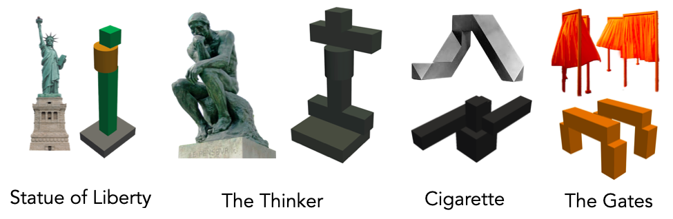
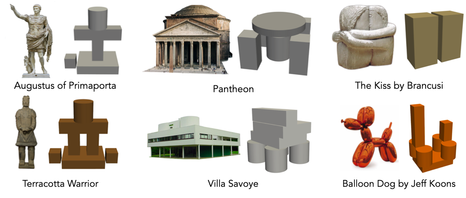

Art and sculpture convey human creativity. In this project, we explore how a large Vision Language Model (VLM) can be used to generate novel 3D sculptural compositions and whether VLMs can recreate recognizable representational sculptures using a limited set of physical components. In a recent paper accepted to ICRA 2025 (Goldberg et al., 2024), we implement Blox-Net, a Generative Design for Robot Assembly (GDfRA) system. Given a natural language prompt (e.g., “giraffe”), Blox-Net generates and assembles a representational structure with limited available parts. In this paper, we use Blox-Net for generative sculptural assembly, exploring its ability to interpret and recreate iconic works of art. In particular, we examine three case studies: Frédéric Auguste Bartholdi’s Statue of Liberty, Auguste Rodin’s The Thinker, Tony Smith’s Cigarette, and Christo and Jeanne-Claude’s The Gates.

These generations from Blox-Net prompt broader questions about the nature of creativity, authorship, and artistic expression in an age increasingly shaped by AI and robotics. What does it mean for a machine to “create” art? Traditional conceptions of art emphasize intention, emotion, and indi vidual perspective. In contrast, Blox-Net generates sculp tures by sampling from distributions, optimizing for sta bility and recognizability under physical constraints. While it lacks consciousness or subjective experience, Blox-Net outputs meaningful interpretations. See more in our paper.
If you use this work or find it helpful, please consider citing:
@inproceedings{kondap2025sculpture,
title={Generative AI and Minimalist Sculpture},
author = {Kondap, Kavish and Bass, Andy and Hill, Elle O and Raffle, Paloma and Goldberg, Andrew and Qiu, Tianshuang and Ma, Zehan and Fu, Letian and Kerr, Justin and Huang, Huang and Chen, Kaiyuan and Fang, Kuan and Goldberg, Ken}
booktitle={Proceedings of the ICRA 2025 Workshop on Art in Robotics},
year={2025},
organization={IEEE}
}